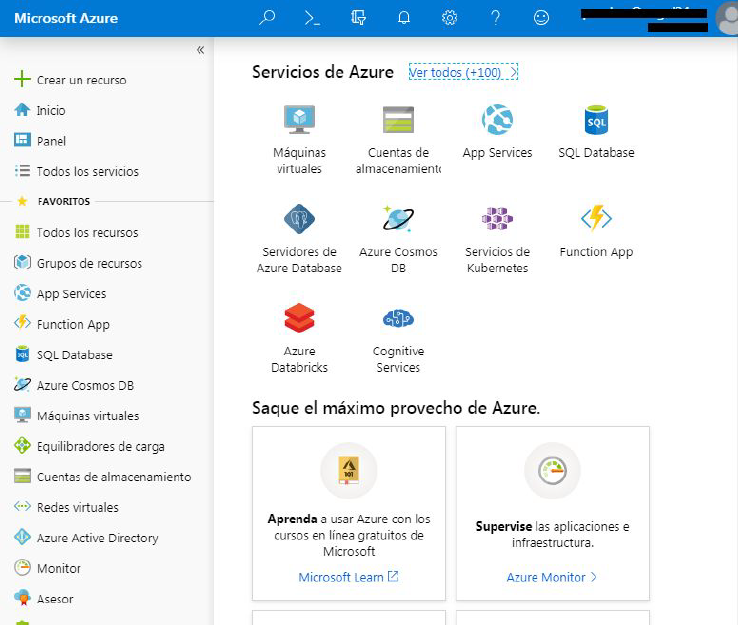
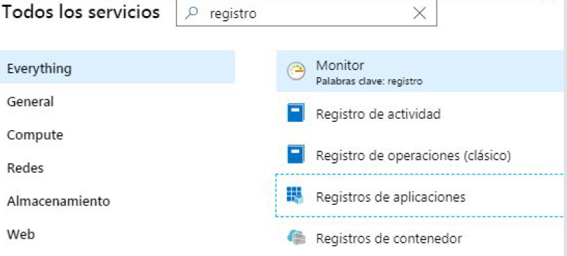
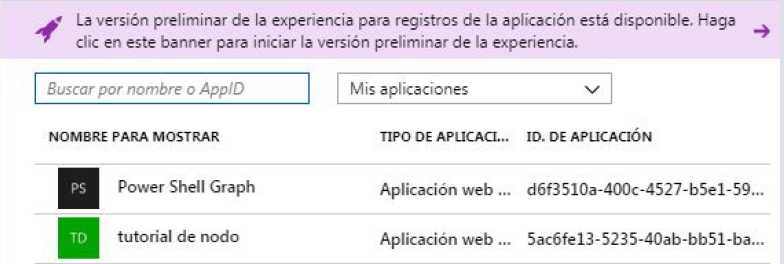
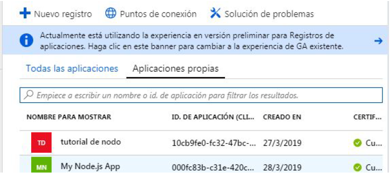
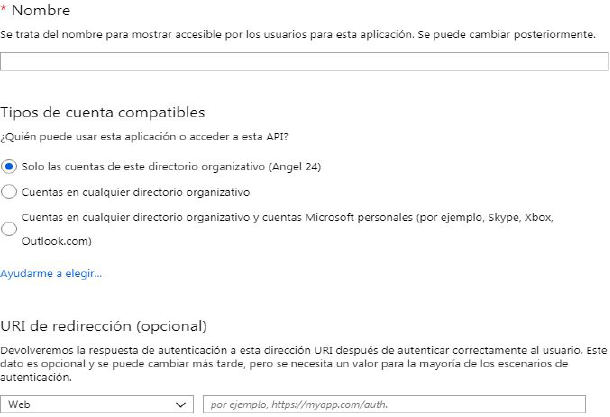
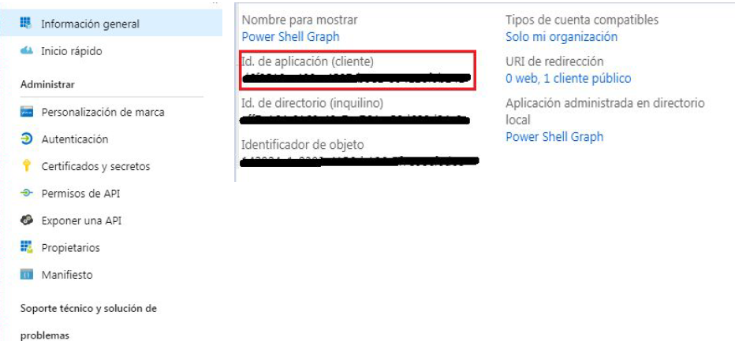
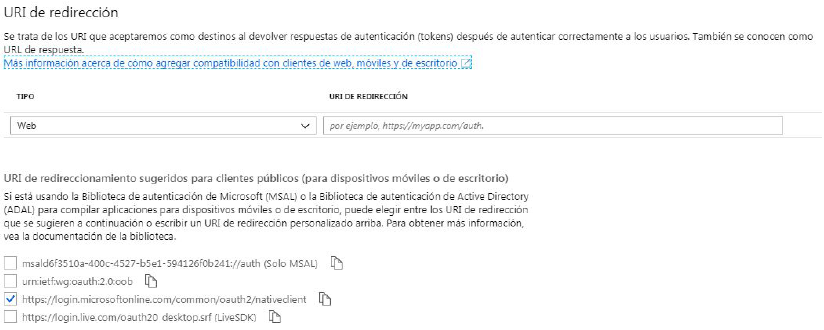
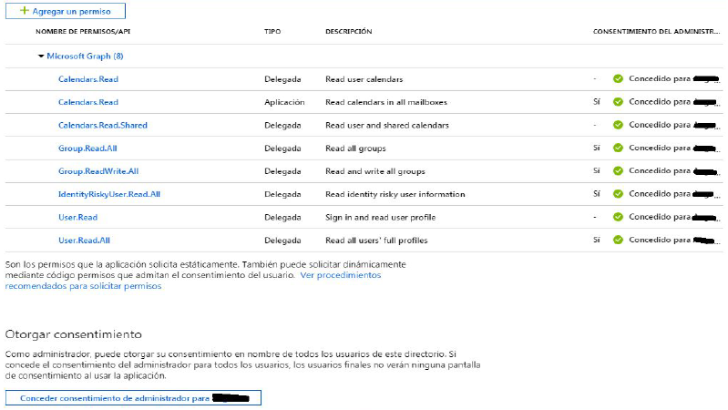
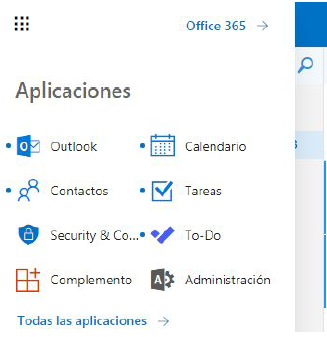
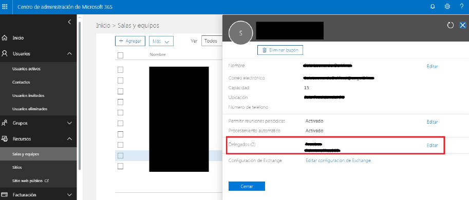

TUTORIAL GOOGLE
Para registrar una aplicación en Azure es necesario acceder al Portal de Azure y acceder
con una cuenta de office365.

Una vez dentro y logueado, es necesario hacer clic sobre ver todos los servicios de Azure y
posteriormente buscar “registro de aplicaciones” y entrar en este servicio.

Una vez dentro podremos registrar nuestra aplicación. En este caso usaremos la versión
preliminar, por tanto accederemos a dicha versión haciendo clic sobre el recuadro morado.

Para registrar una aplicación nueva hacemos clic en el “+ Nuevo Registro”.

Una vez comenzado el proceso de registro introduciremos los datos de la aplicación a
registrar salvo el dato de “URI de redirección” que lo haremos más adelante.

Una vez completado el registro de la aplicación, es necesario guardar la siguiente
información para posteriormente usarla en el script:
- Id. de aplicación (cliente)
- Redirect Uri
La Id de la aplicación se puede obtener accediendo a la información general de la
aplicación.

La Url de redirección se obtiene haciendo clic sobre el menú de “Autenticación”.
Este nos desplegara la opción de obtener una URI personalizada un predefinida. En este
caso dado que no es importante usaremos una predefinida. Seleccionamos una de las
opciones, y guardamos el enlace.

Finalmente es necesario otorgar los permisos a la aplicación para poder acceder a los
diversos ámbitos de Office365, como el calendario o mail. Se puede acceder haciendo clic
en la opción “Permisos de API” en el menú.
Una vez dentro, para agregar permisos se hace clic sobre el botón “+ Agregar un permiso”
en la parte superior izquierda. Ahora se seleccionan los permisos necesarios, en la imagen
de abajo se muestran algunos ejemplos. Finalmente una vez agregados en esta misma
venta en la parte inferior es necesario otorgarse los consentimientos de administrador para
algunos permisos, en caso contrario, estos no funcionarán.

En primer lugar se ha de entrar en Office365 y hacer login. Una vez dentro se despliegan
las aplicaciones y accedemos al apartado de “Administración”.

Accedemos a Recursos, y posteriormente a
“Salas y equipos”. En este apartado es necesario seleccionar los recursos y delegar
permisos sobre la cuenta que estamos usando de Office365.
